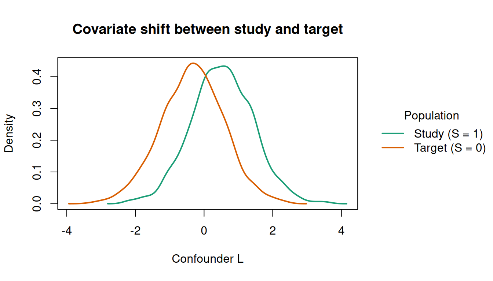
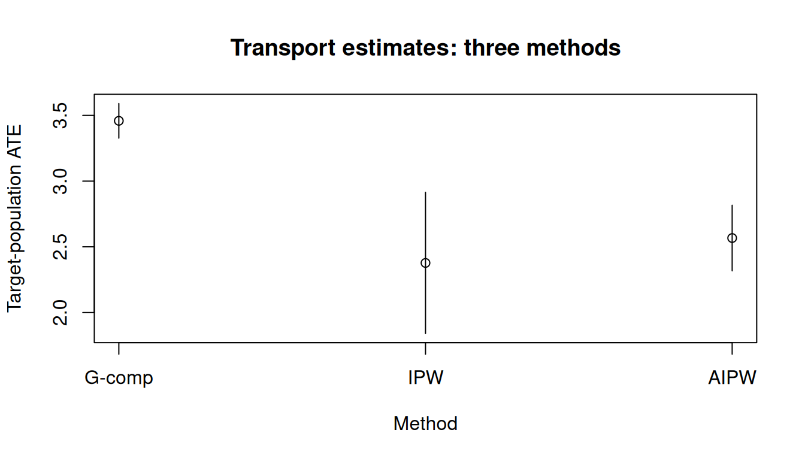

Code
library(causatr)Causal effects estimated by causat() are, by default, effects in the study sample — the rows of data. In applied work the scientific question is often about a different population: a clinic, country, or cohort that differs in covariate distribution from the study. Moving the estimand from study to target is the job of transportability (or generalizability) weights.
This vignette shows how to transport causal estimates to a target population using the target = argument.
library(causatr)We simulate a mixed dataset with study rows (\(S = 1\), full data) and target rows (\(S = 0\), covariates only):
set.seed(42)
n <- 3000
L <- rnorm(n)
S <- rbinom(n, 1, plogis(-0.5 + 1.0 * L))
A <- ifelse(S == 1L, rbinom(n, 1, plogis(0.2 + 0.3 * L)), NA_integer_)
Y <- ifelse(S == 1L, 2 + 3 * A + 1.5 * L + 1.0 * A * L + rnorm(n), NA_real_)
df <- data.frame(Y = Y, A = A, L = L, S = S)
head(df)
#> Y A L S
#> 1 8.600228 1 1.3709584 1
#> 2 NA NA -0.5646982 0
#> 3 NA NA 0.3631284 0
#> 4 7.208478 1 0.6328626 1
#> 5 NA NA 0.4042683 0
#> 6 NA NA -0.1061245 0
table(df$S)
#>
#> 0 1
#> 1843 1157The true ATE in any population is \(3 + 1 \cdot E[L]\) (a constant main effect of 3 plus an interaction \(A \times L\)). Because the sampling model shifts the \(L\)-distribution, the study (\(E[L \mid S=1] \approx 0.5\)) and target (\(E[L \mid S=0] \approx -0.35\)) populations have different ATEs: roughly 3.5 vs 2.65.
The covariate shift is visible in the density of \(L\) by selection status. The study (\(S = 1\)) overrepresents high values of \(L\), while the target (\(S = 0\)) is shifted left:
dens_df <- data.frame(
L = df$L,
Population = ifelse(df$S == 1L, "Study (S = 1)", "Target (S = 0)")
)
tinyplot::tinyplot(
~ L | Population,
data = dens_df,
type = "density",
lwd = 2,
xlab = "Confounder L",
ylab = "Density",
main = "Covariate shift between study and target",
palette = "dark2"
)
This shift is exactly what the sampling model \(P(S = 1 \mid L)\) captures. Without transport weights, causal estimates reflect the study’s skewed \(L\)-distribution rather than the target’s.
target = argumentPass the name of the binary selection indicator (\(S\)) to target =:
fit_gc <- causat(
df,
outcome = "Y",
treatment = "A",
confounders_outcome = ~ L + A:L,
confounders_treatment = ~ L,
confounders_sampling = ~ L,
target = "S"
)
#> Warning: `model_fn` not specified; defaulting to `stats::glm`.
#> ℹ Set `model_fn` explicitly (e.g. `model_fn = stats::glm` or `model_fn = mgcv::gam`).
fit_gc
#> <causatr_fit>
#> Estimator: G-computation
#> Type: point
#> Outcome: Y (gaussian)
#> Treatment: A
#> Estimand: ATE
#> Conf (outcome): ~L + A:L
#> Conf (treatment): ~L
#> Conf (sampling): ~L
#> N: 3000The outcome model includes the A:L interaction to capture the heterogeneous treatment effect. Without it, g-comp would estimate a constant ATE (\(\approx 3\)) regardless of target population.
This tells causatr to:
Use confounders_sampling to specify a different covariate set for the sampling model than for the outcome or treatment models.
res_gc <- contrast(
fit_gc,
interventions = list(a1 = static(1), a0 = static(0)),
reference = "a0"
)
res_gcEstimator: gcomp · Estimand: ATE · Contrast: difference · CI method: sandwich · N: 1843
| intervention | estimate | se | ci_lower | ci_upper |
|---|---|---|---|---|
| a1 | 4.169 | 0.078 | 4.015 | 4.323 |
| a0 | 1.578 | 0.063 | 1.455 | 1.701 |
| comparison | estimate | se | ci_lower | ci_upper |
|---|---|---|---|---|
| a1 vs a0 | 2.591 | 0.082 | 2.43 | 2.752 |
Compare with the study-only estimate (no target =):
fit_study <- causat(
df[df$S == 1, ],
outcome = "Y",
treatment = "A",
confounders = ~ L + A:L
)
#> Warning: `model_fn` not specified; defaulting to `stats::glm`.
#> ℹ Set `model_fn` explicitly (e.g. `model_fn = stats::glm` or `model_fn = mgcv::gam`).
res_study <- contrast(
fit_study,
interventions = list(a1 = static(1), a0 = static(0)),
reference = "a0"
)
res_studyEstimator: gcomp · Estimand: ATE · Contrast: difference · CI method: sandwich · N: 1157
| intervention | estimate | se | ci_lower | ci_upper |
|---|---|---|---|---|
| a1 | 6.357 | 0.078 | 6.205 | 6.51 |
| a0 | 2.842 | 0.06 | 2.725 | 2.959 |
| comparison | estimate | se | ci_lower | ci_upper |
|---|---|---|---|---|
| a1 vs a0 | 3.516 | 0.067 | 3.385 | 3.647 |
The two estimates differ because the target population has a different distribution of \(L\) than the study sample:
study_transport_df <- data.frame(
Target = c("Study only", "Transport (S = 0)"),
Estimate = c(res_study$contrasts$estimate[1],
res_gc$contrasts$estimate[1]),
CI_lower = c(res_study$contrasts$ci_lower[1],
res_gc$contrasts$ci_lower[1]),
CI_upper = c(res_study$contrasts$ci_upper[1],
res_gc$contrasts$ci_upper[1])
)
tinyplot::tinyplot(
Estimate ~ Target,
data = study_transport_df,
type = "pointrange",
ymin = study_transport_df$CI_lower,
ymax = study_transport_df$CI_upper,
pch = 19,
ylab = "ATE estimate (95% CI)",
main = "Study-population vs target-population ATE"
)
The target_subset argument controls which rows define the target:
target_subset = "target" (default): the target population is \(S = 0\) only. This is transportability — the study is external to the target.target_subset = "all": the target population is \(S = 0 \cup S = 1\) (the full combined sample). This is generalizability — the study is a biased subsample of the target.fit_gen <- causat(
df,
outcome = "Y",
treatment = "A",
confounders_outcome = ~ L + A:L,
confounders_treatment = ~ L,
confounders_sampling = ~ L,
target = "S",
target_subset = "all"
)
#> Warning: `model_fn` not specified; defaulting to `stats::glm`.
#> ℹ Set `model_fn` explicitly (e.g. `model_fn = stats::glm` or `model_fn = mgcv::gam`).
res_gen <- contrast(
fit_gen,
interventions = list(a1 = static(1), a0 = static(0)),
reference = "a0"
)
res_genEstimator: gcomp · Estimand: ATE · Contrast: difference · CI method: sandwich · N: 3000
| intervention | estimate | se | ci_lower | ci_upper |
|---|---|---|---|---|
| a1 | 5.013 | 0.067 | 4.882 | 5.144 |
| a0 | 2.065 | 0.053 | 1.961 | 2.17 |
| comparison | estimate | se | ci_lower | ci_upper |
|---|---|---|---|---|
| a1 vs a0 | 2.948 | 0.069 | 2.812 | 3.083 |
All three point-treatment estimators support target =:
Under IPW, the treatment density-ratio weights are multiplied by sampling weights \(w^S_i = [1 - \hat P(S = 1 \mid L_i)] / \hat P(S = 1 \mid L_i)\):
fit_ipw <- causat(
df,
outcome = "Y",
treatment = "A",
confounders = ~ L,
estimator = "ipw",
target = "S"
)
#> Warning: `model_fn` not specified; defaulting to `stats::glm`.
#> ℹ Set `model_fn` explicitly (e.g. `model_fn = stats::glm` or `model_fn = mgcv::gam`).
#> Warning: `propensity_model_fn` not specified; defaulting to `stats::glm`.
#> ℹ Set `propensity_model_fn` explicitly if you need a different fitter (e.g. `mgcv::gam`).
res_ipw <- contrast(
fit_ipw,
interventions = list(a1 = static(1), a0 = static(0)),
reference = "a0"
)
res_ipwEstimator: ipw · Estimand: ATE · Contrast: difference · CI method: sandwich · N: 1843
| intervention | estimate | se | ci_lower | ci_upper |
|---|---|---|---|---|
| a1 | 3.989 | 0.252 | 3.496 | 4.482 |
| a0 | 1.611 | 0.122 | 1.373 | 1.85 |
| comparison | estimate | se | ci_lower | ci_upper |
|---|---|---|---|---|
| a1 vs a0 | 2.377 | 0.274 | 1.84 | 2.914 |
AIPW combines the outcome model and treatment weights with sampling weights, providing consistency if either the outcome model or the treatment model is correctly specified:
fit_aipw <- causat(
df,
outcome = "Y",
treatment = "A",
confounders_outcome = ~ L + A:L,
confounders_treatment = ~ L,
confounders_sampling = ~ L,
estimator = "aipw",
target = "S"
)
#> Warning: `model_fn` not specified; defaulting to `stats::glm`.
#> ℹ Set `model_fn` explicitly (e.g. `model_fn = stats::glm` or `model_fn = mgcv::gam`).
#> Warning: `propensity_model_fn` not specified; defaulting to `stats::glm`.
#> ℹ Set `propensity_model_fn` explicitly if you need a different fitter (e.g. `mgcv::gam`).
res_aipw <- contrast(
fit_aipw,
interventions = list(a1 = static(1), a0 = static(0)),
reference = "a0"
)
res_aipwEstimator: aipw · Estimand: ATE · Contrast: difference · CI method: sandwich · N: 1843
| intervention | estimate | se | ci_lower | ci_upper |
|---|---|---|---|---|
| a1 | 4.127 | 0.115 | 3.902 | 4.352 |
| a0 | 1.554 | 0.069 | 1.418 | 1.689 |
| comparison | estimate | se | ci_lower | ci_upper |
|---|---|---|---|---|
| a1 vs a0 | 2.573 | 0.108 | 2.362 | 2.784 |
methods_df <- data.frame(
Method = c("G-comp", "IPW", "AIPW"),
Estimate = c(
res_gc$contrasts$estimate[1],
res_ipw$contrasts$estimate[1],
res_aipw$contrasts$estimate[1]
),
CI_lower = c(
res_gc$contrasts$ci_lower[1],
res_ipw$contrasts$ci_lower[1],
res_aipw$contrasts$ci_lower[1]
),
CI_upper = c(
res_gc$contrasts$ci_upper[1],
res_ipw$contrasts$ci_upper[1],
res_aipw$contrasts$ci_upper[1]
)
)
tinyplot::tinyplot(
Estimate ~ Method,
data = methods_df,
type = "pointrange",
ymin = methods_df$CI_lower,
ymax = methods_df$CI_upper,
ylab = "Target-population ATE",
main = "Transport estimates: three methods"
)
When outcomes are subject to right-censoring, censoring = adds inverse-probability-of-censoring weights (IPCW). These compose seamlessly with transportability weights — the three weight components (treatment, censoring, sampling) multiply pointwise:
set.seed(99)
n2 <- 4000
L2 <- rnorm(n2)
S2 <- rbinom(n2, 1, plogis(-0.5 + 1.0 * L2))
A2 <- ifelse(S2 == 1L, rbinom(n2, 1, plogis(0.2 + 0.3 * L2)), NA_integer_)
C2 <- ifelse(S2 == 1L, rbinom(n2, 1, plogis(-1.5 + 0.5 * A2 + 0.3 * L2)), 0L)
#> Warning in rbinom(n2, 1, plogis(-1.5 + 0.5 * A2 + 0.3 * L2)): NAs produced
Y2_full <- ifelse(S2 == 1L, 2 + 3 * A2 + 1.5 * L2 + rnorm(n2), NA_real_)
Y2 <- ifelse(C2 == 1L, NA_real_, Y2_full)
df2 <- data.frame(Y = Y2, A = A2, L = L2, S = S2, C = C2)All three estimators support IPCW + transport:
fit_ipcw_gc <- causat(
df2,
outcome = "Y",
treatment = "A",
confounders = ~ L,
target = "S",
censoring = "C"
)
#> Warning: `model_fn` not specified; defaulting to `stats::glm`.
#> ℹ Set `model_fn` explicitly (e.g. `model_fn = stats::glm` or `model_fn = mgcv::gam`).
res_ipcw_gc <- contrast(
fit_ipcw_gc,
interventions = list(a1 = static(1), a0 = static(0)),
reference = "a0"
)
res_ipcw_gcEstimator: gcomp · Estimand: ATE · Contrast: difference · CI method: sandwich · N: 2384
| intervention | estimate | se | ci_lower | ci_upper |
|---|---|---|---|---|
| a1 | 4.583 | 0.057 | 4.472 | 4.694 |
| a0 | 1.529 | 0.055 | 1.421 | 1.636 |
| comparison | estimate | se | ci_lower | ci_upper |
|---|---|---|---|---|
| a1 vs a0 | 3.055 | 0.061 | 2.936 | 3.174 |
The sandwich variance accounts for all three nuisance models (outcome, censoring, sampling) via the influence-function correction chain.
For static interventions, target-row predictions use \(\hat{m}(a, L_i)\) directly. But MTP interventions — shift(), scale_by(), threshold(), dynamic() — transform the observed treatment via \(d(A, L)\), and target rows (S = 0) have \(A = \text{NA}\). causatr solves this via MC marginalization: it integrates \(E_{A \mid L, S=1}[\hat{m}(d(A,L), L)]\) over the study treatment distribution. For binary treatment this is exact enumeration; for continuous treatment it draws Monte Carlo samples from a fitted treatment model.
set.seed(201)
n3 <- 6000
L3 <- rnorm(n3)
S3 <- rbinom(n3, 1, plogis(-0.5 + L3))
A3 <- ifelse(S3 == 1L, rnorm(n3, 0.5 + 0.3 * L3, 1), NA_real_)
Y3 <- ifelse(
S3 == 1L,
2 + 3 * A3 + 1.5 * L3 + A3 * L3 + rnorm(n3),
NA_real_
)
df3 <- data.frame(Y = Y3, A = A3, L = L3, S = S3)
fit_mtp <- causat(df3, "Y", "A", ~ L + A:L, target = "S")
#> Warning: `model_fn` not specified; defaulting to `stats::glm`.
#> ℹ Set `model_fn` explicitly (e.g. `model_fn = stats::glm` or `model_fn = mgcv::gam`).
res_mtp <- contrast(
fit_mtp,
interventions = list(shifted = shift(1), natural = NULL),
reference = "natural",
type = "difference",
ci_method = "bootstrap",
n_boot = 200
)
res_mtpEstimator: gcomp · Estimand: ATE · Contrast: difference · CI method: bootstrap · N: 3633
| intervention | estimate | se | ci_lower | ci_upper |
|---|---|---|---|---|
| shifted | 5.34 | 0.098 | 5.148 | 5.532 |
| natural | 2.693 | 0.089 | 2.518 | 2.868 |
| comparison | estimate | se | ci_lower | ci_upper |
|---|---|---|---|---|
| shifted vs natural | 2.647 | 0.034 | 2.581 | 2.713 |
The analytical truth for this DGP is \(3 \delta + \delta \cdot E[L \mid S = 0]\); the bootstrap CI should bracket it.
Important: sandwich variance is not available for gcomp or AIPW with MTP + transport, because the MC marginalization introduces treatment-model dependence not captured by the current IF chain. Use ci_method = "bootstrap" instead. IPW + MTP + transport supports sandwich (no MC marginalization needed).
Transportability composes with longitudinal IPW (id =, time =). The sampling model is fit on first-period rows, and the resulting sampling-odds weight is broadcast to all person-period rows for each individual. The sampling weight multiplies into the per-period treatment density-ratio weight inside the longitudinal Hájek MSM.
set.seed(314)
n_long <- 1500
L0 <- rnorm(n_long)
S <- rbinom(n_long, 1, plogis(-0.3 + 0.8 * L0))
A0 <- ifelse(S == 1L, rbinom(n_long, 1, plogis(0.3 * L0)), NA_integer_)
L1 <- ifelse(S == 1L, 0.5 * L0 + 0.4 * A0 + rnorm(n_long, sd = 0.5), NA_real_)
A1 <- ifelse(S == 1L, rbinom(n_long, 1, plogis(0.3 * L1)), NA_integer_)
#> Warning in rbinom(n_long, 1, plogis(0.3 * L1)): NAs produced
Y <- ifelse(
S == 1L,
2 * A0 + 2 * A1 + L0 + 0.5 * L1 + rnorm(n_long),
NA_real_
)
# Build person-period data
wide <- data.frame(id = seq_len(n_long), L0 = L0, S = S,
A0 = A0, L_1 = L0, A1 = A1, L_2 = L1, Y = Y)
long <- to_person_period(
wide,
id = "id",
time_varying = list(L = c("L_1", "L_2"), A = c("A0", "A1")),
time_invariant = c("L0", "S", "Y")
)fit_long <- causat(
long,
outcome = "Y",
treatment = "A",
confounders = ~ L0,
confounders_tv = ~ L,
id = "id",
time = "time",
estimator = "ipw",
target = "S"
)
res_long <- contrast(
fit_long,
interventions = list(always = static(1), never = static(0)),
reference = "never"
)
res_longEstimator: ipw · Estimand: ATE · Contrast: difference · CI method: sandwich · N: 1500
| intervention | estimate | se | ci_lower | ci_upper |
|---|---|---|---|---|
| always | 3.975 | 0.12 | 3.739 | 4.211 |
| never | -0.737 | 0.148 | -1.027 | -0.448 |
| comparison | estimate | se | ci_lower | ci_upper |
|---|---|---|---|---|
| always vs never | 4.712 | 0.184 | 4.352 | 5.073 |
ICE g-computation also supports longitudinal transport — the outcome model is fit on study rows, and counterfactual predictions are averaged over the target population’s baseline covariates.
Joint-treatment IPW (treatment = c("A1", "A2")) composes with transport. The per-component density-ratio weights from the sequential MTP factorisation multiply with the sampling-odds weight:
set.seed(808)
n_mv <- 2000
L_mv <- rnorm(n_mv)
S_mv <- rbinom(n_mv, 1, plogis(-0.5 + 0.8 * L_mv))
A1_mv <- ifelse(
S_mv == 1L, rbinom(n_mv, 1, plogis(0.2 + 0.3 * L_mv)), NA_integer_
)
A2_mv <- ifelse(
S_mv == 1L,
rbinom(n_mv, 1, plogis(0.1 + 0.2 * L_mv + 0.3 * A1_mv)),
NA_integer_
)
#> Warning in rbinom(n_mv, 1, plogis(0.1 + 0.2 * L_mv + 0.3 * A1_mv)): NAs
#> produced
Y_mv <- ifelse(
S_mv == 1L,
1 + 2 * A1_mv + 1.5 * A2_mv + L_mv + 0.5 * A1_mv * L_mv + rnorm(n_mv),
NA_real_
)
df_mv <- data.frame(Y = Y_mv, A1 = A1_mv, A2 = A2_mv, L = L_mv, S = S_mv)fit_mv <- causat(
df_mv,
outcome = "Y",
treatment = c("A1", "A2"),
confounders = ~ L,
estimator = "ipw",
target = "S"
)
#> Warning: `model_fn` not specified; defaulting to `stats::glm`.
#> ℹ Set `model_fn` explicitly (e.g. `model_fn = stats::glm` or `model_fn = mgcv::gam`).
#> Warning: `propensity_model_fn` not specified; defaulting to `stats::glm`.
#> ℹ Set `propensity_model_fn` explicitly if you need a different fitter (e.g. `mgcv::gam`).
res_mv <- contrast(
fit_mv,
interventions = list(
both = list(A1 = static(1), A2 = static(1)),
neither = list(A1 = static(0), A2 = static(0))
),
reference = "neither"
)
res_mvEstimator: ipw · Estimand: ATE · Contrast: difference · CI method: sandwich · N: 1169
| intervention | estimate | se | ci_lower | ci_upper |
|---|---|---|---|---|
| both | 4.193 | 0.176 | 3.848 | 4.538 |
| neither | 0.736 | 0.112 | 0.517 | 0.954 |
| comparison | estimate | se | ci_lower | ci_upper |
|---|---|---|---|---|
| both vs neither | 3.458 | 0.196 | 3.073 | 3.842 |
Sandwich and bootstrap variance both work for multivariate IPW transport. Stabilized weights (stabilize = "marginal") also compose with transport.
Use confounders_sampling to control which covariates enter the sampling model \(P(S = 1 \mid L)\) independently of the outcome or treatment model covariates:
fit_sep <- causat(
df,
outcome = "Y",
treatment = "A",
confounders_outcome = ~ L + A:L + I(L^2),
confounders_treatment = ~ L,
confounders_sampling = ~ L,
estimator = "aipw",
target = "S"
)
#> Warning: `model_fn` not specified; defaulting to `stats::glm`.
#> ℹ Set `model_fn` explicitly (e.g. `model_fn = stats::glm` or `model_fn = mgcv::gam`).
#> Warning: `propensity_model_fn` not specified; defaulting to `stats::glm`.
#> ℹ Set `propensity_model_fn` explicitly if you need a different fitter (e.g. `mgcv::gam`).
res_sep <- contrast(
fit_sep,
interventions = list(a1 = static(1), a0 = static(0)),
reference = "a0"
)
res_sepEstimator: aipw · Estimand: ATE · Contrast: difference · CI method: sandwich · N: 1843
| intervention | estimate | se | ci_lower | ci_upper |
|---|---|---|---|---|
| a1 | 4.131 | 0.112 | 3.911 | 4.351 |
| a0 | 1.552 | 0.069 | 1.417 | 1.686 |
| comparison | estimate | se | ci_lower | ci_upper |
|---|---|---|---|---|
| a1 vs a0 | 2.579 | 0.104 | 2.375 | 2.783 |
This is especially useful when the outcome model benefits from flexible specifications (splines, polynomials) while the sampling model needs only the core set of baseline confounders.
diagnose() includes a sampling model panel for transport fits, reporting the sampling-score distribution, sampling-weight summary, and extreme-weight flags:
diag <- diagnose(fit_ipw)
#> Note: `s.d.denom` not specified; assuming "pooled".
diag
#> <causatr_diag>
#> Estimator:ipw
#> Treatment: binary
#> Estimand: ATE
#>
#> Positivity:
#> statistic value
#> <char> <num>
#> min 0.3283844
#> q25 0.5232723
#> median 0.5772245
#> q75 0.6320640
#> max 0.8095657
#> n_below_lower 0.0000000
#> n_above_upper 0.0000000
#> n_violations 0.0000000
#> pct_violations 0.0000000
#>
#> Covariate balance:
#> Balance Measures
#> Type Diff.Un M.Threshold.Un V.Ratio.Un
#> L Contin. 0.3319 Not Balanced, >0.1 1.1408
#>
#> Balance tally for mean differences
#> count
#> Balanced, <0.1 0
#> Not Balanced, >0.1 1
#>
#> Variable with the greatest mean difference
#> Variable Diff.Un M.Threshold.Un
#> L 0.3319 Not Balanced, >0.1
#>
#> Sample sizes
#> Control Treated
#> All 492 665
#>
#> Weight distribution:
#> group n mean sd min max ess
#> <char> <int> <num> <num> <num> <num> <num>
#> treated 665 1.742163 0.2607069 1.235230 2.994992 650.4557
#> control 492 2.346339 0.4437681 1.488947 5.075262 475.0418
#> overall 1157 1.999081 0.4604115 1.235230 5.075262 1098.7680
#>
#> Sampling model:
#> statistic value
#> <char> <num>
#> n_study 1157.0000
#> n_target 1843.0000
#> pct_study 38.5700
#> target_subset NA
#> p_study_min 0.0159
#> p_study_q05 0.0875
#> p_study_median 0.3619
#> p_study_q95 0.7599
#> p_study_max 0.9619
#> p_study_mean_s1 0.4980
#> p_study_mean_s0 0.3152
#> sw_mean 1.5937
#> sw_sd 1.9389
#> sw_min 0.0396
#> sw_max 18.6510
#> sw_ess 466.7700
#> sw_n_extreme 0.0000Key diagnostics to check:
p_study_min and p_study_max quantiles flag overlap violations.Transport estimates require four assumptions (Dahabreh et al. 2020):
Assumptions 1–2 are the standard causal assumptions (checked via diagnose() balance and positivity panels). Assumption 3 is the transportability leap — it is not directly testable but requires domain knowledge. Assumption 4 is checked by the sampling diagnostics.
Matching + transportability is a hard rejection:
causat(
df,
outcome = "Y",
treatment = "A",
confounders = ~ L,
estimator = "matching",
target = "S"
)
#> Error in `causat()`:
#> ! `target` is not supported with `estimator = "matching"`.
#> ℹ Transportability does not compose cleanly with matching. Use `estimator = "gcomp"` or `"ipw"` instead.This is by design: MatchIt’s match-weight pathway does not compose cleanly with external sampling weights.
| Estimator | Treatment | Transport | Sandwich | IPCW | Status |
|---|---|---|---|---|---|
| gcomp | binary | Yes | Yes | Yes | Yes |
| gcomp | continuous (MTP) | Yes (MC) | No (bootstrap) | --- | Yes |
| gcomp | multivariate | Yes | Yes | --- | Yes |
| gcomp | longitudinal (ICE) | Yes | Yes | --- | Yes |
| IPW | binary | Yes | Yes | Yes | Yes |
| IPW | continuous (MTP) | Yes | Yes | --- | Yes |
| IPW | multivariate | Yes | Yes | --- | Yes |
| IPW | longitudinal | Yes | Yes | Yes | Yes |
| AIPW | binary | Yes | Yes | Yes | Yes |
| AIPW | continuous (MTP) | Yes (MC) | No (bootstrap) | --- | Yes |
| AIPW | multivariate | Yes | Yes | --- | Yes |
| matching | any | No | --- | --- | Rejected |
See FEATURE_COVERAGE_MATRIX.md for the full test-level coverage breakdown.